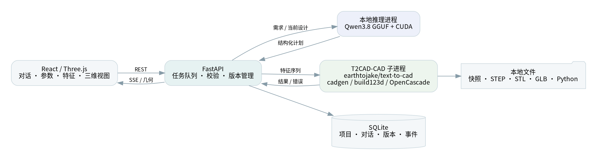
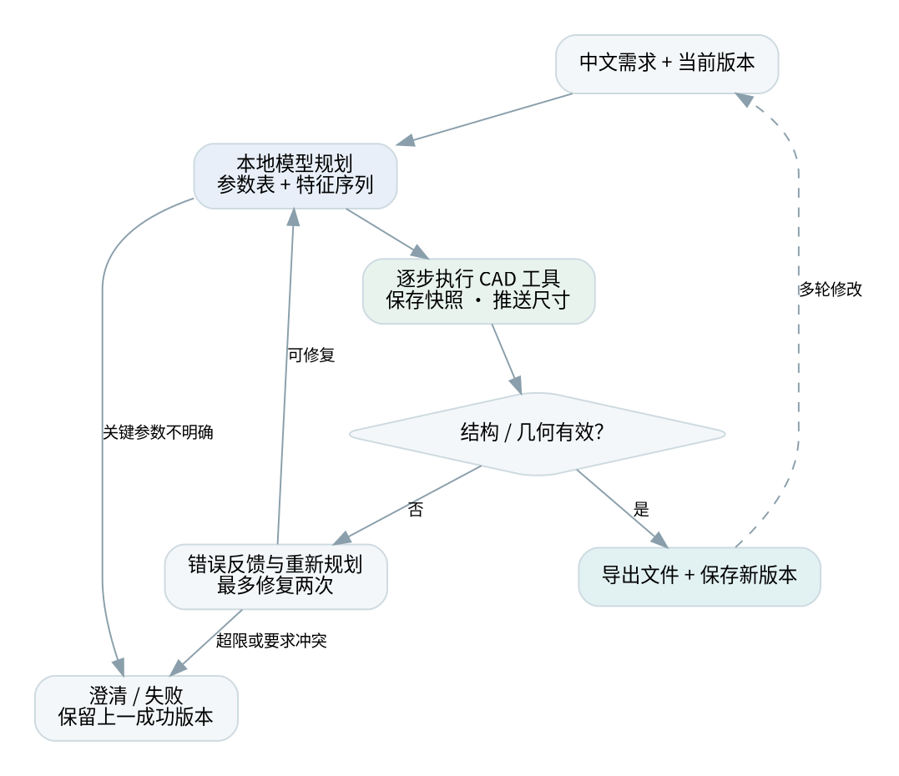
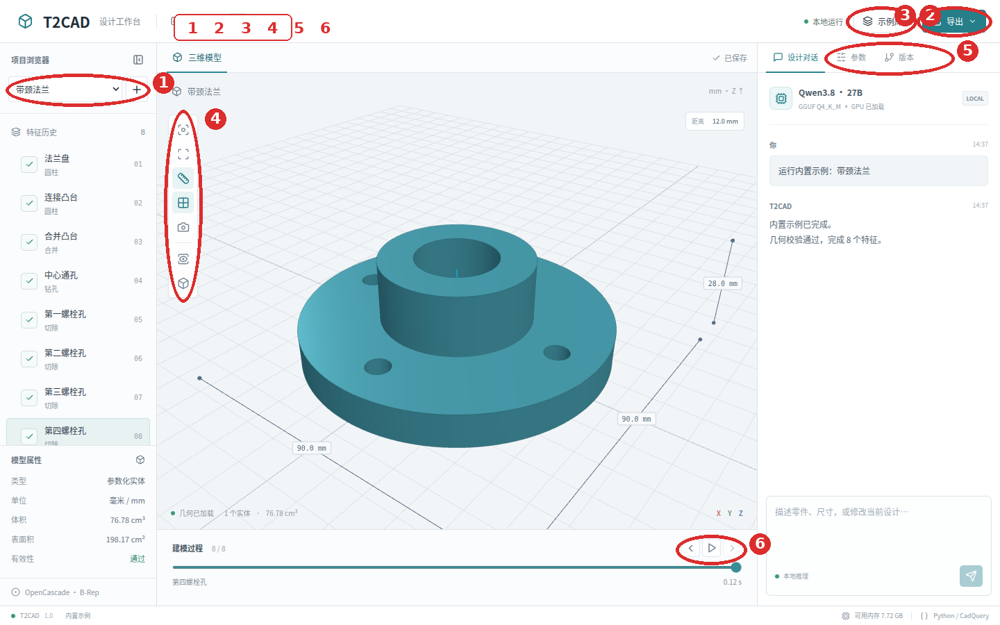
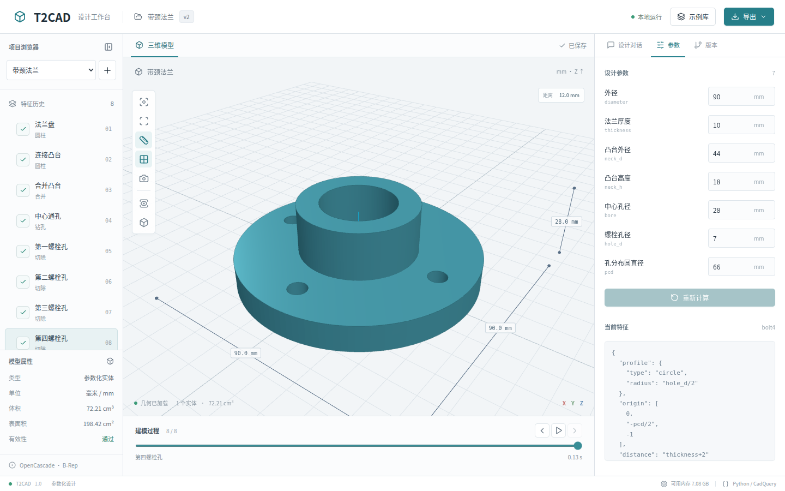
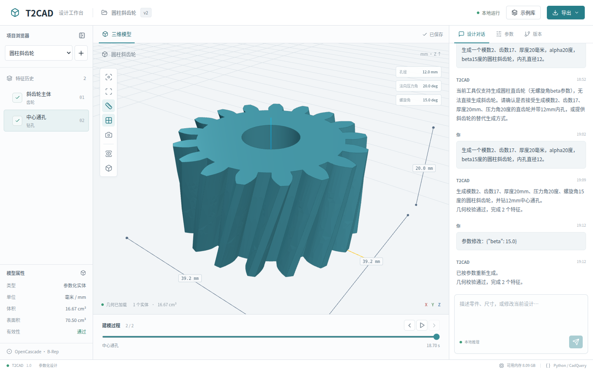
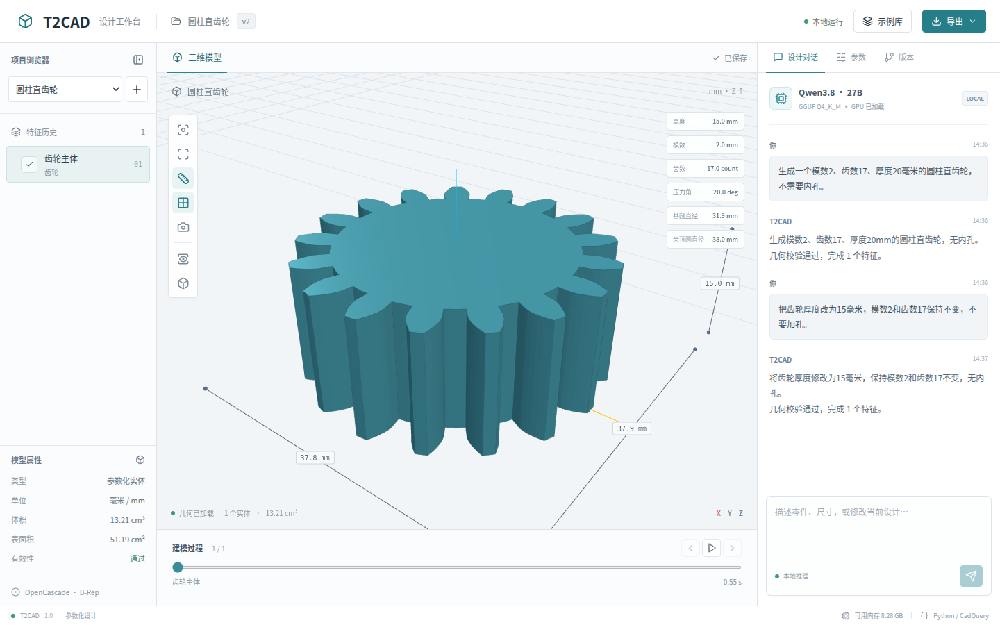
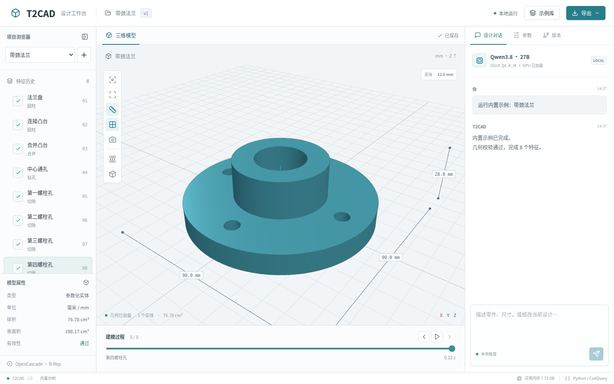

CAD 技术课程实验报告
姓名：________ 学号：________ 课程：________
面向机械零件概念设计与教学演示，本文设计并实现一个前后端分离的本地 CAD 原型。系统通过 Qwen3.8 语言模型将中文需求转化为参数表和顺序特征计划，由 Python 工具执行器调用 earthtojake/text-to-cad 的 cadgen / build123d / OpenCascade 生成边界表示实体，并向网页三维工作台持续推送实际建模过程。系统支持多轮修改、直接编辑参数、版本回退和多格式导出。推理采用 GGUF 量化权重直接加载，不依赖云端 API 或 Ollama。通过几何有效性检查、结构化错误反馈与有限次重新规划，系统将自然语言交互和确定性的 CAD 几何计算连接起来。
关键词：参数化建模；自然语言 CAD；大语言模型；工具调用；OpenCascade；本地推理
研究对象为安装板、法兰、阶梯轴套、L 形支架和仪器壳体等典型机械零件。这些零件通常由少量有明确尺寸的平面、圆柱面、孔槽和倒圆角构成，具有加工特征清晰、设计参数可解释、同类零件尺寸变化频繁等特点。课程教学不仅需要看到最终外观，还需要理解草图、拉伸、切除、连接和修饰等步骤如何形成最终结构。
在概念设计阶段，设计者常以自然语言描述总体外形与尺寸，并在看到模型后持续调整局部细节。传统交互要求设计者手动选择工作平面、创建草图、设置特征和维护历史树，具有一定学习成本；单纯文本生成网格则不容易保留精确尺寸和可重建的工程参数。
传统参数化 CAD 已形成成熟的特征历史、边界表示和几何内核体系。脚本式 CAD 把建模过程表达为程序，便于自动化、批量变型和版本管理[3]。近年来，Text2CAD 研究文本到顺序 CAD 操作的生成[1]；Text-to-CadQuery 探索利用程序表示及大模型的代码生成能力描述 CAD[2]。SketchGraphs 将参数化草图表示为几何约束图，为约束推断和草图生成提供了大规模数据基础[23]；SketchGen 进一步研究了带约束草图的序列生成[24]；DeepCAD 把 CAD 操作序列看作一种结构化形状表示[25]。研究系统的目标和评价设置各不相同，本报告把相关研究作为方法依据，而把本系统的几何回归和真实交互作为实验事实。
本原型采用现成通用语言模型作为规划器，并通过受约束的操作集合执行几何任务。相比训练专用 CAD 模型，该方案的部署和数据准备成本更低，但泛化能力受操作范围、提示词和推理模型能力共同限制。这个选择与 CAD 领域长期强调的“设计意图、约束和可编辑历史”是一致的：系统的重点不是把一句话变成一张漂亮的网格，而是让尺寸、特征和修改关系可以被追踪[4][5][10]。
功能需求包括中文描述生成零件、参数集中管理、逐步显示建模几何、尺寸显示、多轮修改、错误反馈、版本保存和 STEP/STL 等文件导出。非功能需求包括本地运行、前后端分离、任务可取消、失败可恢复、安装过程可复现，以及在 RTX 3090 24GB 与约 16GB 系统内存的机器上运行。
将零件定义为参数集合 P 与有序特征集合 F。第 i 个特征使用已有几何和参数产生新的形状：Sᵢ = fᵢ(S₀…Sᵢ₋₁, P)。参数修改后重新执行特征序列，即得到尺寸一致的新版本。参数名采用英文标识，界面标签使用中文；表达式只允许参数引用与基本算术。
系统以 B-Rep 精确实体作为主模型，显示时将实体离散为三角网格。STEP 用于交换精确实体，STL/GLB 用于网格显示或后续应用。参数历史单独保存在设计 JSON 与数据库中，不能认为 STEP 天然保留本系统的特征历史。B-Rep 的拓扑结构、曲面边界和实体有效性检查分别承担不同职责，这也是 Open CASCADE 这类几何内核适合课程原型的原因[4]。BRepNet 说明了直接利用 B-Rep 拓扑关系进行学习的价值[26]，SolidGen 则展示了直接生成顶点、边和面的另一条路线[27]；本系统选择保留参数特征序列，再由内核生成 B-Rep。
当前实现统一使用 earthtojake/text-to-cad 发布的 cadgen 0.7.24，采用其 build123d 原生几何接口和 @step/@stl/@glb 导出接口[19][20]。此项目与同名 Text2CAD 论文及 MLYengineering/Text2CAD 不同。草图、拉伸、旋转、孔、布尔、倒角与阵列统一在新执行层完成；直齿轮采用 bd-warehouse 0.3.0 的渐开线齿轮实现，避免语言模型用圆柱或任意多边形代替齿形[21]。可继续在齿轮上组合孔等特征。浏览器显示采用 Three.js 的 WebGL 渲染和轨道交互[22]。
圆柱斜齿轮复用渐开线端面齿廓与 build123d 的螺旋扫掠。默认采用法向制：mₜ=mₙ/cosβ，tanαₜ=tanαₙ/cosβ，分度圆直径 d=mₜz；厚度 h 对应的总扭转角为 θ=2h·tanβ/d（弧度）。因此螺旋角 β 不能直接当作上下端面的总扭转角。正负 β 分别生成右旋和左旋，内孔保持沿轴向的直通圆孔。系统也支持显式端面制输入，并记录制式与换算结果。齿廓未模拟滚刀齿根包络、变位或修缘。
大模型读取用户要求、当前设计和近期对话，生成结构化建模计划。输出受到 JSON Schema 约束，随后由 Pydantic 检查数据结构；工具执行器再校验参数和几何。模型负责选择操作、安排顺序及表达修改意图，几何内核负责执行数学运算。CadVLM 将视觉和语言结合到参数化草图生成中[28]，CADLLM 类工作把文本描述、建模序列预测和置信度结合起来[29]；FutureCAD 进一步探索了由 LLM 生成程序并对 B-Rep 选择进行文本 grounding[30]。本系统采用较小而明确的操作集合，强调课堂环境下的可解释执行。
工具执行出现异常时，系统把特征 ID、操作和结构化错误返回给规划器。系统允许有限次数的反馈式重新规划，并锁定用户明确指定的尺寸参数，避免通过改变尺寸掩盖几何问题。无法满足要求时应澄清或终止。该闭环能利用运行时反馈改善结果，但不保证任意描述均可成功。
实现中进一步检查参数是否实际被几何操作使用，以及最终包围尺寸是否符合设计文档中的目标尺寸。矩形四角孔与圆周孔采用通用布局工具计算位置，避免把坐标算术完全交给语言模型。纠错阶段增加有限的内部规划预算，并反馈各步骤的实际包围盒；最终输出仍为受约束的结构化设计。目标尺寸本身由规划器提取，因此这些检查不能取代独立的设计审核。
当前默认模型为 Qwen3.8-27B Q4_K_M，GGUF 文件约 17.4GB。系统管理一个本地 llama.cpp CUDA server 子进程，通过仅回环监听和随机密钥的 HTTP 接口调用，模型权重全程在本机。默认上下文 8192 token、单模型单任务；使用顺序读取代替 mmap，降低 16GB 系统内存环境中的换页压力。模型只在首次使用时加载，之后复用常驻进程。
量化减少权重存储与显存需求，单进程模型复用避免重复加载。去掉额外模型服务路由简化了部署，但资源占用的主要决定因素仍是模型权重、KV 缓存、上下文长度和 GPU 卸载配置。Swap 只作为内存压力下的缓冲，不能替代显存，也不作为性能保证。
参数化表示使多轮修改具有稳定的数据基础；精确几何内核提供实体运算和标准文件输出；结构化工具接口把语言生成与几何操作连接起来；执行反馈提供可定位的纠错依据；三维过程显示使自动建模具备教学可解释性。这些能力共同服务于“可生成、可观察、可修改、可验证”的课程目标。
本报告选择齿轮作为重点对象，是因为齿轮同时包含离散参数和连续几何。模数 m、齿数 z、压力角 α、螺旋角 β 和齿宽 h 具有明确的机械意义，任何一个参数改变都会影响齿廓、分度圆、啮合关系或轴向受力。对于法向制斜齿轮，端面模数满足 mₜ=mₙ/cosβ，端面压力角满足 tanαₜ=tanαₙ/cosβ，分度圆直径为 d=mₜz；这些换算关系在齿轮设计资料中有系统说明[11][12][13]。因此，语言模型不能只把 beta 当作一个显示标签，而必须把它传递给实际扫掠操作。
本系统的做法是先生成渐开线齿廓，再使用 build123d 的旋转拉伸形成螺旋齿面。厚度 h 对应的总扭转角为 θ=2h·tanβ/d，β 的正负表示左右旋。中心孔作为后续轴向切除特征生成，避免孔随齿廓扭转。这个实现适合课程中的参数化演示和标准零件概念设计，但不等价于完整的齿轮制造软件：没有加入齿根滚刀包络、变位系数、齿向修形、齿面接触分析和强度校核。机械传动设计中常用的啮合、接触比和承载校核应由专门工具或工程手册完成[12][13][14]。
系统分为项目管理、设计对话、模型规划、参数化几何执行、结果验证、三维显示、版本管理和文件导出八个模块。项目管理维护持久化设计；对话模块组织上下文；规划器输出操作序列；几何执行器逐步生成实体；校验模块检查实体与导出；工作台同步显示特征、尺寸和事件；版本模块支持回退；导出模块生成标准格式和重建脚本。

前端使用 React 和 Three.js，通过 REST API 操作项目与任务，通过 SSE 接收过程事件。FastAPI 后端使用 SQLite 存储项目元数据，并在磁盘中按任务及尝试次数保存文件。推理进程与 CAD 子进程相互独立，避免 CAD 内核错误直接破坏模型进程。单任务队列限制资源竞争。
本次迁移保持前端和 Qwen3.8 模型不变。主服务运行在 T2CAD 环境，CAD 工作进程运行在独立的 T2CAD-CAD 环境，以隔离不同版本的 OpenCascade 绑定。所有最终格式由同一几何实体导出，保存 STEP 后使用 cadgen 独立回读验证；下载的 Python 程序包含参数、特征编译器和 cadgen 导出入口，可在独立环境直接重建。cadgen 遥测和后台 daemon 在本系统中关闭。
设计文档包括名称、参数列表和特征列表。每个特征有稳定 ID、名称、操作和参数；后续特征通过 ID 引用之前的结果。版本记录完整设计、父版本、几何指标和输出目录。任务事件保存顺序编号，浏览器重连可继续读取未接收事件。
核心接口包括 /api/projects、项目下的 /messages 与 /parameters、/api/jobs/{id}/events、版本恢复接口和 /api/artifacts/... 文件接口。修改请求必须带基准版本；过期版本提交返回冲突，防止覆盖较新的设计。项目管理还提供重命名和删除接口，删除操作同时清理项目消息、版本、任务和生成目录；进行中的任务需要先停止，避免文件写入与删除并发发生。这一设计把课程实验中容易忽略的生命周期管理纳入 CAD 原型，而不是只演示一次生成。

尺寸测量直接使用底层曲面计算精确包围盒，避免显示用三角网格误差进入尺寸数据。建模工作进程默认超时为 180 秒；模型加载与推理分别设置超时。取消任务终止 CAD 进程组及其模型程序，保留历史成功版本；服务重启会把未完成任务标记为中断。本机存在 FreeCAD 时，可额外把导出的 STEP 转换为 FCStd 交换文档；该文档不包含原生 FreeCAD 参数特征树。这样的边界划分参考了 CAD 交换标准对几何实体和应用数据分离的思路[6][7]。

图 3 对工作台的主要入口进行了标注。顶部的“示例库”用于快速打开标准零件案例，“导出”提供 STEP、FCStd、STL、GLB、Python 和 JSON 文件；左侧是项目与特征浏览区，中间是三维视口和建模过程，右侧是对话、参数、版本三个工作页签。工作台采用三栏布局，使零件形状、特征顺序和设计输入可以同时出现，适合课堂演示和重复修改。
项目浏览器保存本地零件项目。用户可以新建项目、切换项目、重命名项目或删除不需要的零件；删除操作要求确认，并清理项目关联的版本和生成文件。设计对话框接受中文描述，例如“生成一个长100、宽60、厚8毫米的安装板，四角有直径6毫米的通孔”。系统将描述送入本地 Qwen3.8，由模型整理参数和特征计划，再把计划交给 CAD 执行器。
对话区会显示规划摘要、特征完成事件、实际尺寸和保存状态。用户可以继续输入“把孔径改为8毫米，其他尺寸不变”，系统以当前版本为基准重新计算。对于参数含义不明确的描述，系统先询问必要信息，不直接生成无法解释的几何。这样的交互把 CAD 的设计意图保留在项目消息和参数文档中。

图 4 展示参数页。每个参数同时显示中文标签、程序标识、数值和单位，例如 hole_d 表示孔径，pcd 表示分布圆直径。修改数值后点击“重新计算”，系统重新执行完整特征序列并生成新的版本。右侧参数面板适合精确修改，视口上的尺寸标注适合快速核对；两者来自同一份底层测量结果，不依赖网格估计。
对于齿轮，面板会显示模数、齿数、压力角、螺旋角、基圆直径和齿顶圆直径。斜齿轮的 beta 使用角度单位，正值表示右旋、负值表示左旋，改变 beta 后会重新生成螺旋齿面。中心孔作为独立特征显示在左侧特征树中，便于检查它是否真正参与最终实体。
特征历史以顺序树显示每个建模操作，点击某一项即可查看该步骤的 STL 快照和包围尺寸。底部时间轴可以逐步播放模型从毛坯到最终零件的变化，也可以切换线框、网格、标准视图和适配视图。这个功能把“特征顺序”从数据库中的抽象记录变成可观察的教学过程：学生能看到法兰先生成圆盘和凸台，再进行合并、中心孔和螺栓孔加工。
版本页保存每次成功计算的设计文档、父版本和变化摘要。用户可以回到任意版本继续修改，参数冲突时系统要求以当前版本为基准，避免覆盖其他修改。导出菜单提供精确实体 STEP、FreeCAD 交换文档 FCStd、显示网格 STL/GLB、可重建 Python 和参数 JSON。STEP 适合在 FreeCAD 中继续检查，STL 适合打印或网格处理，GLB 适合浏览器和演示，Python/JSON 适合实验复现。
系统内置五类案例，覆盖基础实体、孔加工、同轴结构、布尔合并和腔体切除。
| 案例 | 主要功能 | 建模特点 | 典型用途 |
|---|---|---|---|
| 四孔安装板 | 矩形实体、四角孔、参数重算 | 孔中心由边距自动计算 | 设备底板、安装支架 |
| 带颈法兰 | 圆柱、合并、中心孔、圆周孔 | 适合观察多级特征依赖 | 管路连接、法兰盘 |
| 阶梯轴套 | 旋转体、同轴孔、不同高度 | 展示旋转剖面和孔加工 | 轴端定位、轴套 |
| L形安装支架 | 多平面拉伸、布尔合并、加强筋 | 展示非共面特征 | 机架连接件 |
| 开口仪器壳体 | 外壳、腔体、开口切除 | 展示薄壁和开口设计 | 电子设备外壳 |
安装板适合第一次演示：输入长度、宽度、厚度、孔径和边距后，可以马上看到四个孔的位置。法兰适合展示参数页和特征回放，修改中心孔径后只改变相关切除特征。轴套和支架适合讲解工作平面、旋转轴和布尔运算；仪器壳体适合说明实体有效性和腔体切除。五类案例的精确尺寸、体积、STEP 回读和 STL 水密性见第 6 章的鲁棒性验证表。

图 5 是完整的斜齿轮演示。输入“模数2、齿数17、厚度20毫米、alpha20度、beta15度、内孔直径12”后，系统生成法向制右旋斜齿轮，并在特征树中分别显示斜齿轮主体和中心通孔。把 beta 修改为 -15 度后，齿面旋向改变，模数、齿数、厚度和孔径保持不变。这个案例集中展示了自然语言输入、角度参数、螺旋扫掠、参数重算和导出文件之间的关系。
测试日期：2026-10-19T14:37:28.747068+08:00
本次核心：earthtojake/text-to-cad / cadgen 0.7.24 / build123d。
| 零件 | 特征数 | 包围尺寸 mm | 体积 mm³ | 几何构建与导出 s | STEP / STL / 脚本 |
|---|---|---|---|---|---|
| 四孔安装板 | 3 | 100 × 60 × 8 | 46985.35 | 1.388 | 通过 |
| 带颈法兰 | 8 | 90 × 90 × 28 | 76780.52 | 1.532 | 通过 |
| 阶梯轴套 | 5 | 48 × 48 × 45 | 36329.38 | 1.621 | 通过 |
| L 形安装支架 | 5 | 80 × 50 × 61 | 40038.19 | 2.014 | 通过 |
| 开口仪器壳体 | 4 | 100 × 70 × 35 | 51407.29 | 1.363 | 通过 |
上表时间仅包含 CAD 工作进程内的构建与导出，不包含模型推理、进程启动或浏览器显示。STEP 回读相对体积误差均小于 10⁻⁷；导出的独立 Python 脚本重建体积一致。
浏览器验证：桌面与移动视口均检测到非空零件像素（115143 / 32831），完成旋转、尺寸切换、参数重算、版本恢复、过程播放和 STEP 下载；页面脚本错误 0 条。
当前默认模型为 Qwen3.8-27B Q4_K_M，使用本地 llama.cpp CUDA 子进程和 JSON Schema 输出。

实际 CAD 核心：earthtojake/text-to-cad / cadgen 0.7.24 / build123d。
| 演示对象 | 实际模型 | 总耗时 s | 模型加载 s | 几何结果 |
|---|---|---|---|---|
| 生成一个模数2、齿数17、厚度20毫米的圆柱直齿轮，不需要内孔。 | Qwen3.8-27B-Q4_K_M.gguf | 320.69 | 298.11 | 通过 |
| 把齿轮厚度改为15毫米，模数2和齿数17保持不变，不要加孔。 | Qwen3.8-27B-Q4_K_M.gguf | 34.72 | 298.11 | 通过 |
上表用于说明本地模型驱动的功能演示，几何尺寸和文件有效性由第 6 章的鲁棒性验证统一检查。
法向模数2、17齿、厚20mm、法向压力角20度、螺旋角15度、孔径12mm的斜齿轮，分别展示右旋和左旋参数。
| 实际模型 | 螺旋角 β | 总扭转角 θ | 分度圆直径 mm | 脚本重建相对体积误差 | 验证 |
|---|---|---|---|---|---|
| Qwen3.8-27B-Q4_K_M.gguf | 15.000 | 17.44616 | 35.19939 | 0.00e+00 | 通过 |
| Qwen3.8-27B-Q4_K_M.gguf | -15.000 | -17.44616 | 35.19939 | 0.00e+00 | 通过 |
几何验证在不同轴向高度采样各齿的分度圆齿厚内外点，核对旋向、扫掠扭转、轴向通孔和切除体积；同时检查参数引用、STEP回读、STL水密性、标准文件下载和独立Python脚本重建。
本实验围绕四个问题展开。第一，受约束的参数化执行器能否稳定生成常见机械零件，并输出可回读的标准文件？第二，本地 Qwen3.8 能否把中文需求转换为包含参数引用和特征依赖的设计？第三，执行错误能否以特征级信息反馈给规划器，而不通过篡改用户尺寸来“修复”结果？第四，针对斜齿轮的 beta 修改能否保持孔径、齿数和厚度不变？
对应地，实验记录五类指标。几何有效性包括实体是否为非空单实体、OpenCascade 有效性和 STL 水密性；尺寸一致性包括精确包围盒和目标高度；交换一致性包括 STEP 回读体积误差、GLB 单位换算和独立 Python 脚本重建；交互一致性包括参数修改、版本恢复、取消、删除和重命名；模型身份包括健康接口中的实际模型名、是否发生回退以及推理耗时。将这些指标分开，是为了避免把“模型生成了一个形状”“形状可以打开”和“形状符合用户语义”混成一个成功率。
五类内置零件覆盖安装板、法兰、阶梯轴套、L 形支架和仪器壳体，特征数量从 3 到 8 个不等。安装板测试四角孔布局和孔径变化；法兰测试多级圆柱合并、中心孔和圆周孔；轴套测试旋转体与同轴孔；支架测试不同工作平面和加强筋；壳体测试开口切除。每个案例均由同一设计 JSON 进入 cadgen 工作进程，导出 STEP、STL、GLB 和 Python 脚本，然后重新读取 STEP 并执行脚本。
从结果看，五类零件的目标包围尺寸分别为 100×60×8、90×90×28、48×48×45、80×50×61 和 100×70×35mm，STEP 回读相对体积误差均为 0，STL 均为水密网格。这里的 0 是在当前文件回读精度下的相对误差，不表示制造测量精度。单个 CAD 工作进程的构建与导出时间约为 1.4–2.0 秒，主要成本来自首次加载 cadgen 运行环境，而非布尔运算本身。详细数据见第5.3节表格。

图 3 以工作台界面展示最终模型和尺寸标注。它并不是新的测试样本，而是把验证数据映射到用户能够检查的视图中：左侧特征树显示执行顺序，中间视口显示网格，右侧参数和对话保留设计上下文。这样的界面组织符合工程 CAD 中“特征历史、几何视图、参数编辑并列”的使用习惯[8][9]。
直齿轮实验使用法向模数 2、17 齿、厚度 20mm。工具使用 bd-warehouse 的渐开线齿廓，不把齿轮简化为圆柱或矩形阵列。在分度圆上逐齿采样，齿厚内侧点应位于实体内，齿槽外侧点应位于实体外；随后切除直径 8mm 的中心孔，体积减少量与 πr²h 一致。这一测试检查了齿形和孔特征是否真的参与最终实体。
斜齿轮实验使用法向模数 2、齿数 17、厚度 20mm、法向压力角 20°、螺旋角 15°、中心孔 12mm。真实结果的端面模数为 2.070552、端面压力角为 20.646896°、分度圆直径为 35.199390mm、齿顶圆直径为 39.199390mm、总扭转角为 17.446163°。右旋版本体积为 16668.7273mm³，改为左旋后体积为 16668.7273mm³，差异在浮点误差范围内；厚度仍为 20mm，孔径仍为 12mm。右旋与左旋的齿面在不同高度位置的采样结果相反，说明 beta 被用于几何扫掠，而不是只进入结果文本。
图 4 是真实 Qwen3.8 规划并由新 CAD 核心生成的斜齿轮。画面中可以同时看到倾斜齿面、中心通孔、法向压力角和螺旋角。移动视口也通过了非空像素、旋转和参数面板检查，说明同一份参数化结果可以在不同屏幕尺寸下复核。
Qwen3.8 的第一轮请求从文本生成参数、齿数、压力角、螺旋角和孔特征；模型输出经过 JSON Schema 和 Pydantic 检查后才进入 CAD 工作进程。第一次冷启动需要读取约 17.4GB 的 GGUF 权重，实测约 256 秒；模型进入常驻状态后，斜齿轮第一轮规划、执行和导出总耗时约 439 秒，其中主要时间来自冷启动和 cadgen 的 STEP/GLB 导出。第二轮把 beta 从 15°改为 -15°，总耗时约 89 秒，没有发生模型回退，也没有修改其他尺寸。
这个结果说明本地部署的瓶颈首先是权重加载和磁盘读写，其次才是语言模型生成。对于课堂演示，可以先启动服务并等待模型就绪，再演示多轮修改；对于批量变型，可以复用常驻模型和独立 CAD 环境。Qwen3.8 的使用方式参考了 Qwen 模型的指令跟随和结构化输出能力[15][16]，但本实验不把通用模型的能力描述成专用 CAD 模型的训练效果。
鲁棒性验证覆盖三类输入边界。第一类是表示边界：未知包围尺寸统一使用 JSON null，参数表达式只允许参数名和四则运算，非法名称、空表达式和除零会在进入几何内核前被拒绝。第二类是几何边界：孔径、齿数、压力角、螺旋角、圆角半径和阵列数量都有范围检查，最终实体必须为非空、有效的单实体。第三类是状态边界：项目重命名和删除要求没有进行中的任务，参数修改必须携带当前版本，取消任务后保留上一成功版本。
结构化输出校验、参数校验和 B-Rep 几何校验形成三层防线。第一层检查字段和类型，第二层检查设计语义能否转成受限操作，第三层检查实体、包围盒、体积和导出文件。三层检查各自处理不同问题，避免让某一个模块承担全部可靠性责任。该设计也便于定位问题：输入问题停留在 API 层，特征问题出现在 CAD 工作日志，文件问题由 STEP 回读和网格检查报告。生成—执行—反馈的循环与程序合成研究中将计算过程显式化的思路相近[1][2][17]。
项目管理实验新增了重命名和删除。重命名后再次生成不会被设计名覆盖；删除操作需要二次确认，且会清理项目关联的消息、版本、任务和生成目录。对进行中任务的删除和重命名返回冲突，必须先停止任务。这个约束看似属于界面细节，实际上关系到实验数据的完整性：如果生成进程仍在写入 STEP，而项目目录已被删除，数据库和文件系统就会出现无法解释的残留状态。
可复现性实验还验证了独立 Python 脚本。脚本内嵌设计 JSON 和特征编译器，在 T2CAD-CAD 环境中再次执行，STEP 回读体积相对误差小于 10⁻⁷。依赖版本、上游来源和许可证记录在 vendor/earthtojake_text_to_cad/SOURCE.json 中；cadgen 遥测、更新检查和后台 daemon 均关闭。软件工程中，锁定依赖和保存输入是可重复实验的基本条件[18][19]。
本实验可以支持以下结论：受约束的参数化执行器能够稳定完成报告选定的基础机械零件；Qwen3.8 能够在本地硬件上生成结构化参数和特征；斜齿轮 beta 变化能够反映到真实齿面旋向；标准文件和重建脚本能够通过自动化回归。实验不能支持“任何自然语言都能一次生成”“几何有效就一定符合制造意图”或“当前齿轮模型已经完成强度认证”等更强结论。
Qwen3.8 需要 CUDA 推理和较大的上下文，CAD 内核则需要稳定的 OpenCascade Python 绑定。把两者放在同一进程中，模型崩溃、内存峰值和 CAD 内核异常会互相影响；把 cadgen 放入独立的 T2CAD-CAD 环境，可以让主 API 保持轻量，也方便对 CAD 进程设置地址空间上限。代价是首次启动要准备两套依赖，进程间需要通过 JSON、SSE 和文件目录传递数据。对于单用户课程原型，这个代价是可以接受的。
任意代码生成看起来灵活，但会带来不可控的文件访问、网络调用、无限循环和难以解释的几何结果。当前系统只允许有限的 box、cylinder、gear、extrude、revolve、hole、布尔、圆角、倒角和阵列操作，数值表达式限制为参数名和基本四则运算。受限操作集合降低了表达能力，却换来了可审计的输入、统一的错误消息和可测试的几何行为。未来可以通过经过审核的新操作扩展能力，而不是开放一个没有边界的解释器。
这套系统适合作为 CAD 方法课程的综合实验。学生可以从同一份需求观察五个层次：产品需求如何转成参数，参数如何组织成特征，特征如何由几何内核执行，执行结果如何通过标准格式交换，以及错误如何在下一轮对话中被定位。与只展示最终 STL 相比，过程事件、包围盒、体积、版本和脚本重建使设计过程更容易复盘。报告中的架构图、流程图、界面截图和斜齿轮案例可以直接对应课程要求中的系统方案、技术路线和结果展示。
第一，加入草图约束求解和稳定拓扑引用，减少复杂修改时面和边选择器失效。第二，加入齿轮啮合检查、接触比、齿根强度和轴向力估算，使斜齿轮结果能够进入初步工程校核。第三，增加装配层和多零件坐标系，让“齿轮—轴—轴承座”成为可验证的系统。第四，建立包含歧义、单位换算和边界输入的中文 CAD 测试集，比较不同模型在结构化计划、几何有效性和尺寸语义上的差异[1][2][20][23][24][25][28][29]。第五，为项目文件增加导入、归档和权限边界，以支持多人课程作业管理。对于更复杂的工业零件，可研究 B-Rep 直接学习[26][27]和程序生成结合拓扑 grounding 的混合方案[30]。
本原型完成了中文需求、结构化规划、精确建模、过程显示、交互修改与文件导出的闭环。设计状态以参数化文档持久化，使自然语言交互可以落到可重建、可比较和可回退的 CAD 结果上。课程价值在于展示语言模型与传统 CAD 内核的职责分工，以及如何通过执行反馈建立可观察的自动建模流程。
局限包括操作集合有限、复杂曲面的支持不足、没有完整草图约束求解和装配系统，以及几何有效性不能全面证明语义符合性。后续可以增加拓扑引用稳定性、约束求解、视觉几何检查、装配关系和针对机械设计的模型适配。未经工程审核的自动生成结果不直接作为制造依据。
文献、模型与软件版本应结合随工程提供的锁定文件和实测记录复核；本报告未使用这些论文的数据集指标代替本系统测量结果。文中编号引用用于说明方法来源和工程背景，实验结论只由本项目保存的脚本、日志、几何文件和浏览器验收记录支持。